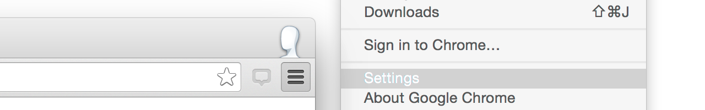

We’re sorry, Hypothes.is couldn’t open that file…
If it’s a local PDF document that you’ve opened from your computer you’ll need to change your settings to allow us to access these files.
You can do this from the extensions menu, using the following steps…
- Step One: Open the Extensions Settings page via Settings > Extensions. 
-
Step Two:
Check the “Allow access to file URLs” checkbox under the Hypothesis extension.

Please note, we currently only support the editing of local PDF files.